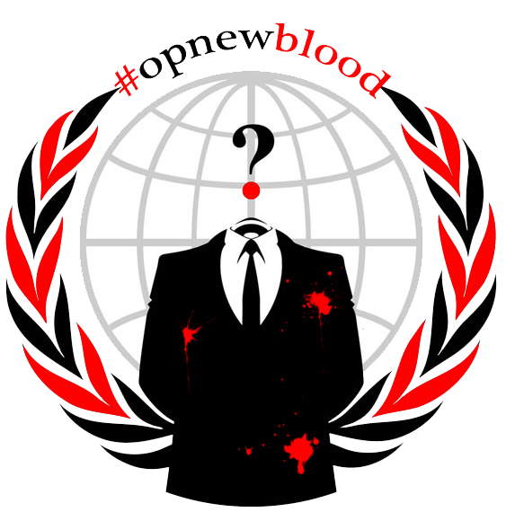

Der richtige Umgang mit dem IRC.Mit dem IRC Verbinden
Viele dieser Dinge sind nur Extras. Ihr braucht nicht alles Wissen. Wir brauchen nicht alles Wissen. Jedoch lieben wir es dieses Zeugs zu schreiben.
Du bist klug wenn du dies alles schon kennst, dann brauchst du es ja auch nicht Lesen...
OK das war sarkastisch. Der IRC ist voll damit also solltet ihr euch daran Gewöhnen.
Wenn ihr findet es war Unhöflich Sarkastisch zu sein, werdet ihr auf dem IRC nicht lange Überleben. :)
Legen wir los!
Zuerst benötigt ihr einen Nicknamen.Ein Nicknamen, oder 'nick' genannt, ist euer IRC Name. Zuerst steht der Nick und dann der Text im IRC damit man weiß wer denn gerade Schreibt.
Wenn ein anderer Benutzer in eurem Namen schreibt ist der Text rot. Manche Programme blinken auf, spielen Soundfiles ab, etc.
Ihr könnt jeden Nick verwenden den ihr wollt, vorausgesetzt kein anderer verwendet ihn.
Die nächste Zeile steht für den Raum z.B #opnewblood etc.
Nicks wie 'justinbieber' oder 'Ims0l33t4ndc00l', werden ins lächerliche gezogen... Ehrlich.
Verbinden
Der leichteste Weg für Neulinge den IRC zu erreichen ist über den Webchat. AnonOps bietet ein SSL verschlüsseltes Web Interface für diesen Zweck.Wenn ihr den Link klickt, wird sich ein neues Fenster öffnen in dem ihr aufgefordert werdet einen Namen und den Kanal zu wählen #Opnewblood
Bitte lest die Seite aufmerksam durch bevor ihr den Webchat betretet. Es wird euch einige Fragen beantworten.
Wenn du bereit bist Klick: AnonOps Webchat
Wenn du nach dem Einloggen eine Nachricht bekommst in dem dein Name bereits ein anderer benutzt, such dir einen neuen Nick aus.
Den Nicknamen ändern:
/nick [euer Nickname hier] (ohne die eckigen Klammern [ ])Beispielsweise- /nick meinneuernick
Registriere deinen Nick
Registrieren erstellt einen Account auf dem AnonOps Netzwerk; der so ausgewählte Nick gehört auch dir. Es gibt noch andere Vorteile, einschließlich der Fähigkeit, in Kanäle erkannt werden, neue Kanäle zu erstellen, etc. Alle Funktionen gehen über das Kommando NickServ.Den eben Benutzten Nicknamen registrieren:
/msg nickserv register [Passwort] [ausgedachte e-mail]Beispiel- /msg nickserv register meingeheimespasswort irgendeine@email.com Bitte Beachte: wenn du dein Passwort vergisst gibt es keine möglichkeit es wieder zu erlangen. Ein neue Registrierung ist erforderlich.
Innerhalb des IRC Navigieren
Jedes mal wenn ihr den IRC mit eurem Nick betretet müsst ihr euch Anmelden. Das nennt man identifying. Zum "identifizieren" den NickServ Befehl benutzen./msg nickserv identify [dein passwort]
Beispiel- /msg nickserv identify meingeheimespasswort
Kanäle
IRC Netzwerke haben Kanäle mit unterschiedlichen Topics (Themen), ihr könnt in mehreren gleichzeitig sein und somit über verschiedenste Themen reden.Diese Netzwerke können hunderte oder gar tausende Kanäle haben, sind allerdings begrenzt mit der Anzahl der Nutzer die sich auf dem Server befinden können.
Der #opnewblood Kanal ist zur Orientierung und somit der Hilfekanal für neue Benutzer. Hier werden eure Fragen zum Thema Client, Netzwerk, etc. beantwortet.
Es werden euch Freiwillige- und Netzwerker zur verfügung stehen, die euch dabei Helfen, euren Chatclienten, eure Verbindung und letztendlich euren PC sicherer zu machen.
Dort befindet sich ebenfalls ein InformationsBot der auf den Namen Infobot hört (bitte nicht Füttern). Ihr könnt von ihm mit -help diverse Informationen über Tutorials erhalten.
Kanäle betreten
/join [#NamedesKanals]Beispiel- /join #anonops
Dieser Befehl bringt euch in den Mainchannel (Hauptkanal). Für den Anfang reicht auch ein einfaches 'Hi' und ihr könnt die Sache ein wenig beobachten um etwas Gefühl dafür zu bekommen.
Kanalsuche
Die meisten kommen auf AnonOpsIRC für einen bestimmten Zweck oder Interesse. Die meisten 'Ops' haben einen eigenen Kanal. Um sie zu finden benutzt die /list Funktion.Der /list Befehl wird euch alle Kanäle inclusive Topic (das Thema für den Kanal) zeigen. Diese Liste ist sehr lang. Glücklicherweise könnt ihr dem List-Befehl eine Suche hinzufügen.
/list #op*
Dies wird euch die Kanäle die mit 'Op' beginnen zeigen, diese dann im 'Status' Tab erscheint.
/list >20 gibt euch eine Liste der Channels aus in dem mehr als 20 Benutzer sind.
Mit ein wenig Übung werdet ihr sicher den Kanal finden den ihr sucht. Sollte es Fehlschlagen besucht #anonops für weitere Hilfe.
Erweiterte IRC Kommandos
Befehl
1) /joinSelbsterklärend, dies wird Eingegeben um z.B. #opnewblood zu Betreten. Beispiel- /join #opnewblood
2) /me
Nicht unbedingt Wichtig. Ihr könnt damit jemand z.B. zuwinken. Beispiel- /me Winkt dies erscheint als "Anon Winkt"
3) /msg
Ihr könnt mit Personen ausserhalb von Kanälen reden in dem ihr folgende Eingabe macht- /msg Name Nachricht. Vergewissert euch dass ein Leerzeichen zwischen Name und Nachricht ist.
4) /query
Gleiches wie msg, es wird für die neue Konversation ein neues Fenster geöffnet.
5) /nick
Dies wird euren Namen ändern. Für Gigapuddi gebt einfach /nick Gigapuddi ein. Zur Erinnerung, der Name ist nicht Registriert bis ihr ihn mit /nickserv wieder Registriert (durch Anon Lesen solltet ihr nicht Wissen was nickserv ist, oder falls ihr Hilfe benötigt)
6) /quit
Wird euch Ausloggen.
7) /ignore
Trolle gibt es überall, und es ist das beste sie nicht zu Füttern sondern einfach zu Ignorieren. Mit /ignore Name
8) /whois
Dies wird euch Informationen der gewählten Person anzeigen, wie den Virtuellen Host, in welchen Kanälen sie sind, ect. Um jemanden zu suchen /whois username
9) /away
Euer Status ist nun 'nicht an der Tastatur', ihr könnt dies verwenden um anderen zu Zeigen dass ihr euch als Beispiel... etwas zu Essen macht oder gerade nicht zurück Schreiben könnt. /away Essen und jeder weiß ihr seid etwas Essen gegangen.
10) /ping
Mit Ping könnt ihr eure Latenz zum Server sehen, sollten Laggs auftreten könnte dieser Befehl nützlich sein. Server Ping mit /ping ipadressehier
11) /notify on/off
Wenn jemand euren Namen schreibt wird ein Akustisches Signal ertönen. Aus: /notify off -- An: /notify on
12) /topic
Das Thema des Kanals /topic zeigt es Euch nochmals in einer Nachticht.
13) /list
Liste der verfügbaren Kanäle.
Im IRC Stöbern
NickServ
Das erste mal wenn du den IRC betrittst bist du ein unregistrierter User. Möchtest du allerdings öfter vorbei kommen lohnt es sich seinen Nick zu Registrieren. Dies hat mehrere Gründe:- Niemand kann sich als euch ausgeben.
- Ihr könnt Dinge tun die ein unregistrierter nicht kann.
- (Das Wichtigste) Es erlaubt euch einen VHOST zu beantragen - dieser versteckt euren Standort und euren ISP (Provider/Internet Anbieter).
Wenn ihr euch mit dem Server verbindet tippt /msg nickserv IDENTIFY danneuerPasswort
Somit könnt ihr euch Identifizieren. Wenn ihr das nicht macht, habt ihr keinen Zugang zum Registrierten-Member-Bereich oder eurem VirtuellenHost. Der Sicherheit halber wird empfohlen den Identify-Befehl im Hauptfenster und nicht in den Kanälen einzugeben denn wenn etwas fehl schlägt, Schreibt ihr das Passwort nicht in den jeweiligen Kanal sondern nur in das Statusfenster.
Gruppen
Solltet ihr vorhaben mehrere Nicknamen zu verwenden könnt ihr diese in eine Gruppe setzen. Dafür gibts mehrere Möglichkeiten entweder um zu sehen von wo aus ihr euch Verbindet oder für den NichtanderTastatur-Status. Beispiel: Benutzer "JohnDoe" geht eine weile raus lässt aber sein Laptop an, in diesem Fall kann er sein Status zu JohnDoe|Away oder JohnDoe|AFK oder so ähnlich ändern damit andere sehen dass er nicht Verfügbar ist. Das ist Wichtig damit sich andere Chatter nicht wundern dass sie keine Antwort erhalten. Er könnte auch JohnDoe|Mobile dass alle wissen er ist auf der MobilenApp, und kann keine Funktionen wie Private Nachrichten erhalten oder gar Links besuchen. Um den Nicknamen zu wechseln benutzt /nick hiereuerneuernick. Wie auch immer...wenn ihr euren neuen Namen eingebt verliert ihr alle Zugangsberechtigungen, Virtuellen Host, und andere Einstellungen die dem Nick zugeornet waren. Um dies zu Umgehen, wenn ihr euren neuen Namen gewählt habt, Loggt auf ihn ein gebt /nick, dann /msg nickserv GROUP Nick Passwort - wo Nick und Passwort sind euren HAUPTNAMEN und das dazugehörige Passwort. Dies Sichert euch das selbe Passwort und die Einstellungen.Ghosts
Mal ganz ehrlich, Missgeschicke passieren jedem. Eine unstabile Internetverbindung. Die Laptop Batterie gibt den Geist auf, das IRC-Client Programm stürzt ab oder ihr schliesst ausversehen das Fenster. Es gibt einige Ursachen warum die Verbindung zum IRC unterbrochen werden könnte. Das Problem dabei ist dass der Server nicht erkennt dass die Verbindung unterbrochen wurde. Ähnlich wie wenn man das Telefon nach dem Gespräch einfach hinlegt, ohne aufzulegen. Oder der Computer abstürzt ohne das koventionelle herrunterfahren. Unter diesen Umständen realisiert der IRC Server nicht dass eure Verbindung unterbrochen wurde und erhält ihn aufrecht. Solange bis der IRC euren Nick pingt und keine Antwort erhält ('ping timeout'). Dies kann unter Umständen eine weile dauern und oftmals wird versucht gleich danach wieder Online zu kommen, bevor der Server realisiert dass eure Verbindung getrennt wurde. Wenn dies Auftritt wird der Server euch einen Anhang an den Nick geben (normalerweise ein a ` oder _ am Ende, wenn also JohnDoe versucht sich wieder zu Verbinden wenn es bereits einen JohnDoe gibt, bekommen die Nachfolger besagte Anhänge: JohnDoe_ oder JohnDoe`. Diese haben, wie ein unidentifizierter Nickname, weder Rechte, noch V-Hosts, keine Zutrittsrechte etc.- weil der "Ghost" oder Geist des Nicks diesen besetzt. Um diese Tote Session nun zu unterbrechen gebt /msg nickserv GHOST Passwort ein, als Passwort das eures normalen Nicks. Dies wird die Verbindung von JohnDoe unterbrechen und JohnDoe_ zu JohnDoe ändern und automatisch Identifizieren. Wenn ihr dies Eingegeben habt werdet ihr vielleicht Nachrichten wie: JohnDoe left the chat room (GHOST command used by JohnDoe_)JohnDoe_ is now known as JohnDoe... lesen. Es ist Wichtig dies schnell zu tun, denn der Virtuelle Host ist für euch in diesem Moment deaktiviert.Virtuelle Hosts
Eine der offensichtlich höchsten Prioritäten eines jeden Anonymous ist es... Anonym zu sein.Wenn ihr unseren IRC Server betretet, wird er eure IP Addresse (deine Computer "Telefon Nummer") Maskieren. Das ist sehr wichtig für die Anonymität. Wir haben auch einen virtuellen Host Server. Dieser gibt euch einen Gefälschten Host Namen über der Maskierten IP. Es kann alles sein was ihr möchtet - für den Fall, dass jemand versucht euren Standort herrauszufinden, sehen diese stattdessen "verpiss.dich.du.hoden". :D Um einen vHost zu bekommen, muss man sich Registrieren und Identifizieren. Darum ist es WICHTIG euch mit Identify so schnell wie möglich zu Identifizieren, denn zuvor wird der vHost nicht Aktiv sein. Einen vHost beantragen:
1. Mit /join #vhost in dem IRC.
2. Innerhalb des vHost Kanals einfach !vhost (euren.gewünschten.host.namen).
VORSICHT : Ihr könnt zwar nehmen was ihr wollt als Vhost - vorausgesetzt er ist Zulässig (Topic! aka Überschrift!), jedoch keine Leerzeichen, und muss als letztes einen Punkt beinhalten. Der weitverbreitetste Weg dies zu tun ist.punkte.als.leerzeichen.in.dem.vhost.zu.benutzen. Nach der Eingabe wird euch vHostServ automatisch aus dem #vhost Kanal Kicken and Verbannen. Das ist normal und auch gewollt, und zeigt dass der vHost Arbeitet. Die Bannung vom Kanal (#vhost) ist nur für eine gewisse Zeit, nach dieser ihr euren VHost wieder ändern könnt wenn gewünscht. Nun besitzt ihr einen Virtuellen Host, und seid voll Gerüstet für den IRC, alle anderen Einstellungen sind nur bei Bedarf. *NOTIZ: Wenn ihr einen #Kanal betretet bevor ihr den vHost aktiviert habt, wird eure Information sichtbar sein. Bitte verlasst die Kanäle und Betretet sie wieder um den VHost zu übernehmen, ansonsten kann jeder euren Standort ausfindig machen.**NOTIZ: Wenn ihr Xchat benutzt mit Automatischem betreten der Kanäle, könnt ihr diesen so Einstellen dass Kanäle erst später Betreten werden mit /set irc_join_delay X Kommando, für X die Zeit in Sekunden angeben bis Automatisch Kanäle betreten werden. Dies auf 10 Sekunden zu setzen kann dabei Helfen sich vorher zu Identifizieren.
Kanäle mit Einladung (mode +i)
Manche Kanäle können nur mit einer Einladung betreten werden. Häufig ist dies, weil der Kanal einen ganz bestimmten Zweck dient und nur Benutzer, die eine bestimmte Aufgabe haben können ihn Betreten- als Beispiel, oder private Kanäle für Betreiber oder Hacker. Hin und wieder wird ein Kanal auf +i dieser ist von Bots und Trollen übernommen. Ein Kanal im Modus +i, ist nicht mit dem Befehl /join betretbar. Ihr werdet eine 'error message' erhalten, in der gesagt wird dass man diesen nur über Einladung betreten kann. Wie auch immer, wenn du Operator bist, oder auf der Ausnahmen Liste, kannst du den Server dazu bringen dich in den Kanal zu lassen. Um dies tun zu können müsst ihr eine Nachricht zu einem anderen Bot Namens ChanServ schicken, welcher nicht in diesem Guide versteckt werden soll aber eher für die Fortgeschrittenen Benutzer gedacht ist. Um eine Kanal-Einladung zu bekommen tippt: /msg chanserv INVITE #Kanal, wobei #Kanal jener ist für den ihr die Einladung haben möchtet. Es ist Wichtig # als Vorzeichen zu benutzen, oder ChanServ reagiert nicht auf die Anfrage.Steht ihr auf der Liste, bekommt ihr eine Nachricht zum betreten des Kanals. Andererseits, ChanServ sagt dass nicht genügend Berechtigungen vorhanden sind. Wenn ihr NICHT auf der Einladungs-oder Operator Liste seid, aber ihr dennoch hinein wollt, gebt /knock #Kanal [Nachricht] ein. Diese erhalten dann die Berteiber für den Kanal und können entscheiden. Ein Beispiel: #brits ist nur für Briten, und ihr habt keine Berechtigung, könnt ihr mit /knock #brits Hey, Ich bin Brite, lasst mich hinein! eine Anfrage schicken. Die Betreiber (wenn sie sich dazu entscheiden euch Zugang zu gewähren) schicken euch die Einladung. Ihr bekommt die gleiche Nachricht wie von ChanServ die fragt ob ihr den Kanal betreten wollt. MERKE: 10 mal an Operator Anfragen zu stellen findet keiner Witzig, und nervt. Mit größter Wahrscheinlichkeit werdet ihr dann keine Einladung erhalten. Wenn ihr nicht sofort eine erhalten solltet sind die Operatoren vielleicht inaktiv, oder haben sich dagegen Entschieden euch auf die Liste zu setzen. Bitte respektiert das. Sollte es eintreten, könnt ihr es später wiederholt versuchen, aber nicht Permanent. Im Extremfall werdet ihr Gebannt. Sollte dennoch keine Antwort kommen habt ihr die Möglichkeit mit /msg ChanServ INFO #Kanal, (nochmals, mit # oder ChanServ ignoriert die Nachricht) Informationen über diesen zu erhalten z.B. wofür er ist und wer ihn erstellt hat. Ihr könnt dann den Raumbesitzer anschreiben... wird aber generell nicht empfohlen, ausser es ist sehr Dringend...

Thema Sicherheit
Netzwerk Administratoren arbeiten mit großer Sorgfalt um die Sicherheit auf dem IRC Server zu wahren. Allerdings haben sie keine Kontrolle über euer Programm.
Weitere Informationen dazu findet ihr auf der AnonOps Security Seite.
Wir empfehlen euch die newblood Security Seite und die Hilfe die in #opnewblood Angeboten wird.